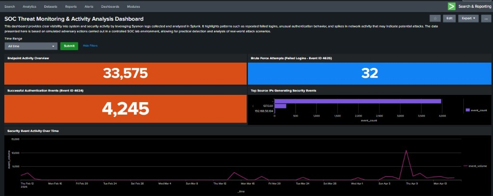
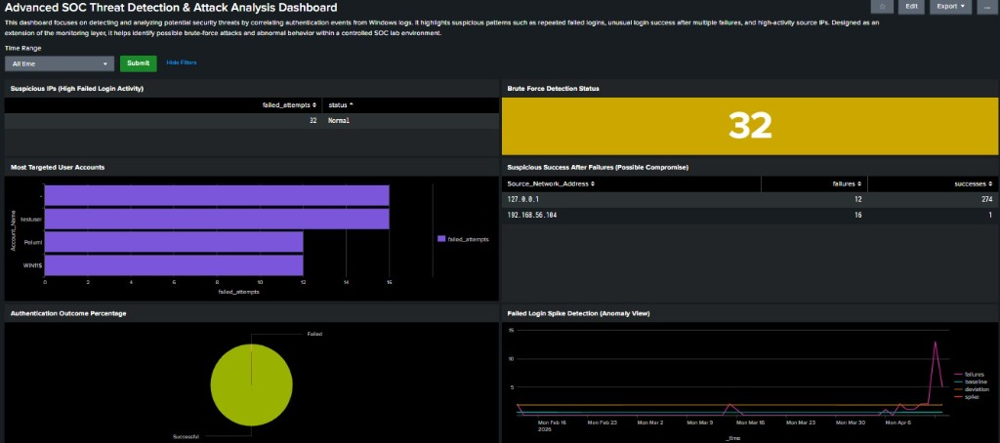

Visualizing the Full Attack Cycle in Splunk
I built two custom dashboards in Splunk to help me track the lab activity. In a real SOC environment, these dashboards are the first thing an analyst looks at to catch spikes in suspicious behavior. They turn thousands of raw logs into a clear story of what is happening on the network.
This primary operations dashboard provides a holistic overview of Windows endpoint events, aggregating metrics natively from Sysmon and Windows SecLogs. It establishes an active situational awareness interface.

This specialized secondary dashboard shifts from event aggregation to active anomaly detection. Utilizing custom statistical metrics to unearth sophisticated threats, such as lateral movement and compromise verification.

192.168.56.104 generating 32 failed attempts.